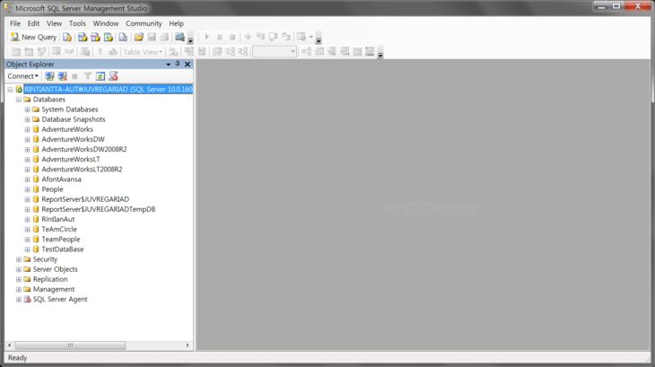
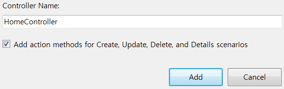

ASP.NET MVC3 Basic - 19강 : with Linq To SQL
시작합시다.
우선 SQL Server Management Studio를 켜줍니다.

그리고 상콤하게 데이터베이스를 만들어주구요.
그리고 테이블을 저장해줍니다.
이제 데이터를 넣어줍니다.
뭐, 적당히 계속 넣었습니다.
".... Product Detaill이.. 사.. 사주세요군요."
『사주시면 감사하겠습니다.』
자, 이제 상콤하게 Visual Studio 2010 을 켭시다.
그리고 ASP.NET MVC3 프로젝트를 만들어줍니다.
LINQ TO SQL 클래스를 만들어줍니다.
위치는 바로 Models 폴더에 만들어주세요
다음과 같이 옮겨주었어요 ㅎㅎ
이제 모델 설정 끝..!
컨트롤러를 만들어줍니다.

그리고 뷰까지 만들어서
모델, 뷰, 컨트롤러를 모두 구성해주었답니다.
위에서 모델을 리스트타입의 Product로 선택해준 것을 기억해주시구요. ㅎㅎ
액션에서 모델을 넘겨줍니다.
실행하시면 다음과 같은 결과를 보실 수 있으실 거랍니다. ㅎㅎ
이건 실패...using문이 없엉. 다른 방법 찾아보지뭐